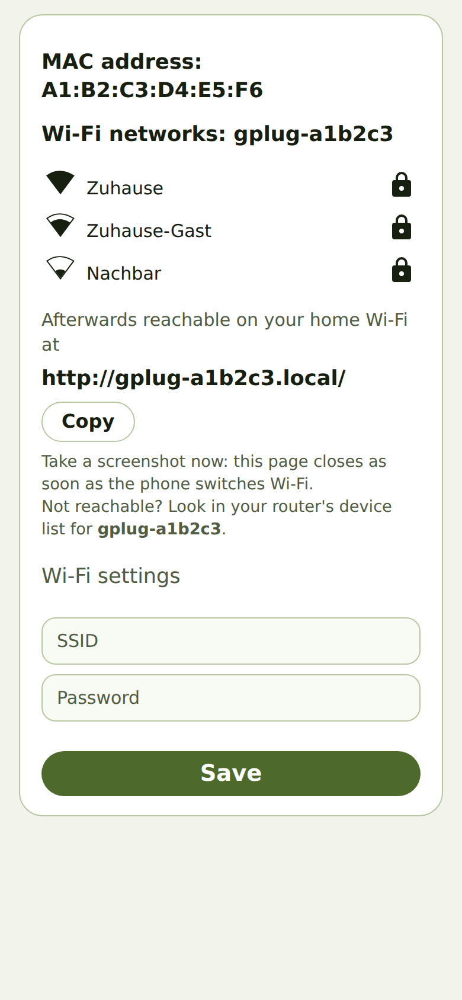
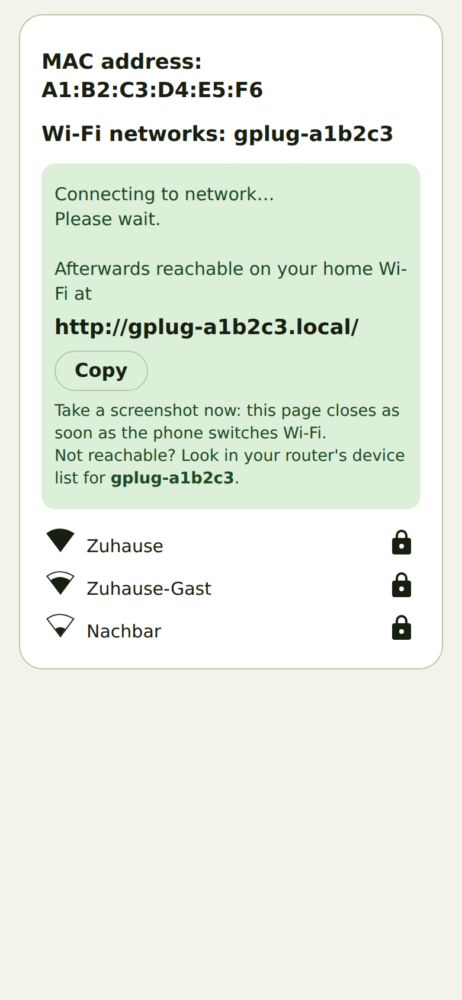

Connect the gPlug to your Wi-Fi
What it is about
As the new owner of a gPlug I want to connect it to my home Wi-Fi so that I can open its app in a browser.
How to do it
- Plug the gPlug into the meter's customer interface. As long as it knows no Wi-Fi, it opens a
network of its own called
gPlug-Setup. - Connect your phone to
gPlug-Setup. The phone opens the setup page by itself; if it does not, openhttp://192.168.4.1/in the browser. - Tap your home network in the list and enter its password under Wi-Fi settings.

Setup page with the networks found - Note the address under Afterwards reachable on your home Wi-Fi at – or tap Copy. It looks like
http://gplug-xxxxxx.local/. - Tap Save. Take a screenshot now: the page closes as soon as the phone switches back to your
home Wi-Fi.

After saving: the gPlug's address from now on - Connect the phone to your home Wi-Fi again and open the address you noted.
How you know it worked
- The address you noted shows the gPlug's setup assistant.
- The
gPlug-Setupnetwork disappears shortly afterwards.
Notes
- The setup page follows the phone's language.
- If the address does not open, look for the gPlug in your router's device list under its name
gplug-xxxxxxand open its IP address.
Checked with the device simulator on 30 September 2026. Checked on real hardware: gPlugK 2026-09-16 (Android).